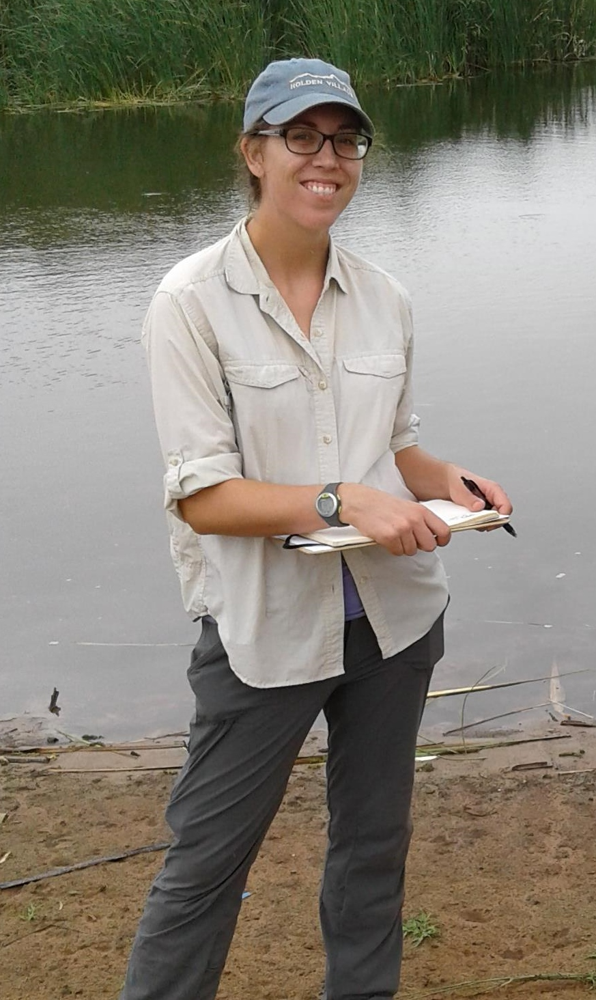

I am a health and environmental scientist, focused on using data to design, implement and evaluate interventions for infectious disease control. My current research examines the social and environmental determinants of infectious disease, with a focus on vector- and water-borne pathogens.
 I am currently a postdoctoral fellow in the Department of Environmental and Occupational Health at the University of Colorado School of Public Health (CSPH) on the Anschutz Medical Campus. My current work in the Carlton Research Group at CSPH is focused on integrating genomic and epidemiologic data to understand the transmission of a snail-borne parasitic disease (schistosomiasis) in an agricultural region of southwest China.
I completed my PhD in the Emmett Interdisciplinary Program in Environment and Resources (E-IPER) at Stanford University, where my field-based dissertation research focused on the human-environment dynamics of schistosomiasis in a dammed landscape in West Africa.
Additional projects include collaborative work on the role of environmental management in disease control supported by the National Socio-Environmental Synthesis Center and win-win solutions for infectious disease control and conservation with the Science for Nature and People Partnership (SNAPP). I have also worked on the ecology of mosquito-borne disease and the socio-environmental determinants of diarrheal pathogens.
In addition to the PhD, I hold an MPH in global epidemiology from the Rollins School of Public Health at Emory University and a BA in biology ans Spanish from the University of Minnesota, Morris.